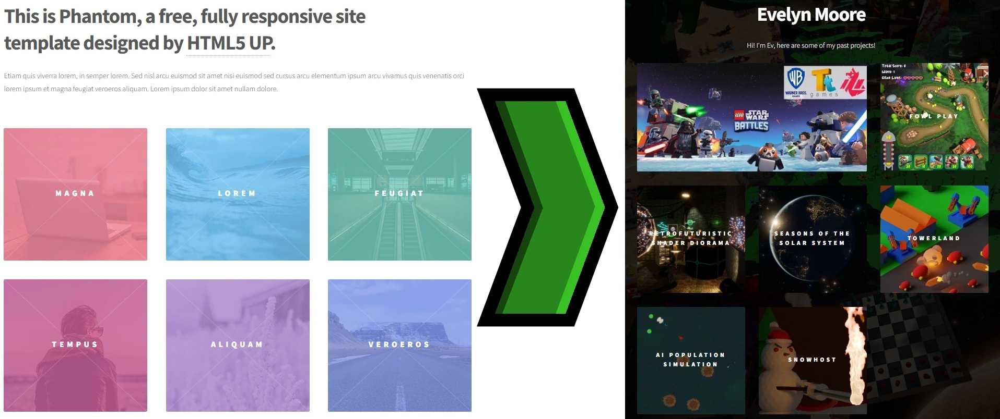
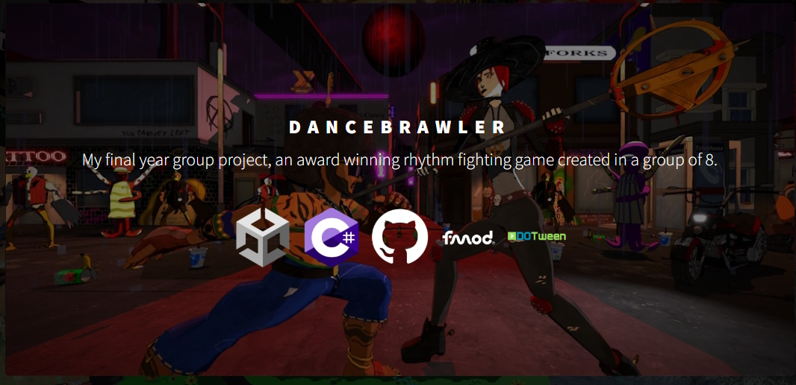
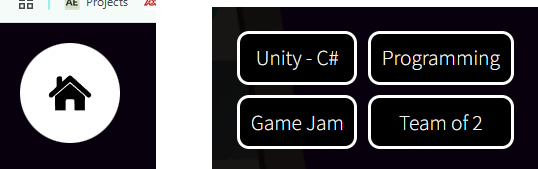
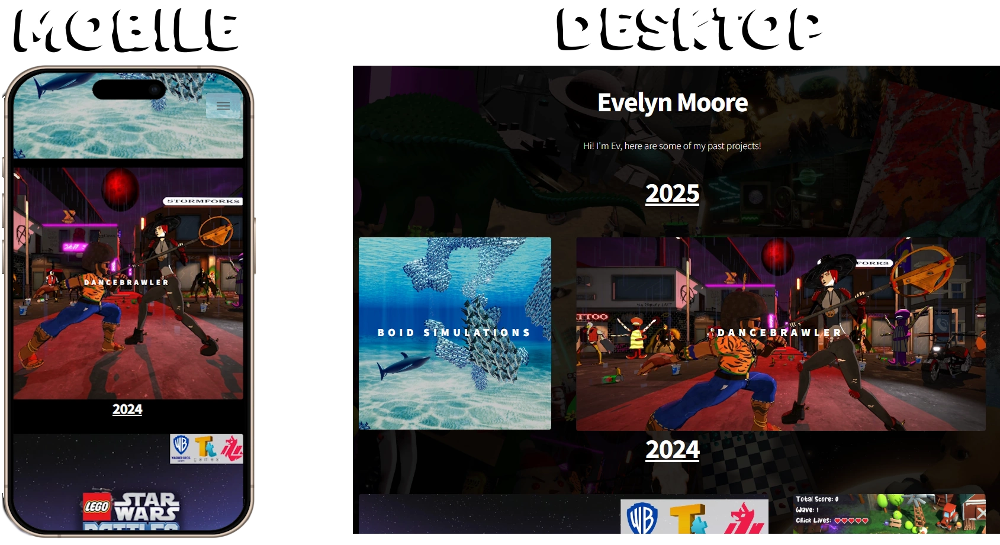

Portfolio Site
I began creating my portfolio site in 2022 to showcase my work. I started with the phantom template from HTML5 UP, because I wanted a similar look and feel to other portfolios such as those on Artstation.
First, I set about removing the colour over the top of the image tiles, then the subtle cross over each image.
I added icons to each project in my portfolio to show at a glance what tools I used. I set up a CSS class to control their behaviour—on desktop, they fade in when you hover over a project tile, but on mobile (since there’s no cursor), they’re always visible.
On the project pages, I added a grid of four cells, which summarise information about the project: The software used for it, the type of skill learned, the reason for doing the project, and the number of people on the project. This provides a quick and easy overview of the main points about each project. I also added a home button to each page after feedback from a web developer testing the site that it was too difficult to navigate back to the index page.
I also wanted to emphasise certain projects, and decided to create a CSS class for "wide tiles" which fit into the same grid as the regular square tiles. There were many considerations to make the site work properly on both desktop and mobile seamlessly, as much of the information on the site on desktop is only visible on hover. For example, there isn't enough horizontal space to display wide tiles on mobile, so they are replaced with square versions.
I host the website using GitHub Pages, which is a great tool for a first website as it has GitHub actions set up that automatically deploy the site whenever changes are pushed to main. Eventually I bought a domain, and learned how to forward users from my old GitHub domain to my new custom one automatically, while keeping the site hosted on GitHub pages.